押し寄せる敵を斬り続ける、無双の爽快感とソウルライクの緊張感を同居させた3Dアクション。
自作エンジンの根幹から、手触りひとつまで作り込んだ。
作品概要
担当ソースコード
ゲームロジック・自作エンジン改造・カスタムシェーダーまで、3層にわたって実装。太字 / オレンジはエンジン側の改造ファイルを示す。
ゲーム部分（actor / battle / camera / collision / core / effect / ui ほか）
actor
- Actor.cpp / .h
- ActorState.cpp / .h
- ActorStateMachine.cpp / .h
- ActorStatus.cpp / .h
- BattleCharacter.cpp / .h
- CharacterSteering.cpp / .h
- EnemyPool.h
- Equipment.cpp / .h
- EquipmentSlot.cpp / .h
- EquipmentSlotManager.cpp / .h
- EventCharacterSpawnManager.cpp / .h
- EventCharacterSpawnManagerObject.cpp / .h
- Gimmick.cpp / .h
- QuadrantManager.cpp / .h
- Types.h
battle
- BattleManager.cpp / .h
- IDamagePopListener.h
camera
- CameraCommon.cpp / .h
- CameraController.cpp / .h
- CameraManager.cpp / .h
- CameraSteering.cpp / .h
collision
- BoundingVolume.cpp / .h
- BroadphaseImpl.cpp / .h
- BroadphaseInterface.cpp / .h
- CollisionHitManager.cpp / .h
- GhostBody.cpp / .h
- GhostBodyManager.cpp / .h
- GhostPrimitive.cpp / .h
- PhysicalBody.cpp / .h
- Types.h
core
- Fade.cpp / .h
- GameResultData.h
- ParameterManager.cpp / .h
- TaskSchedulerSystem.cpp / .h
effect
- EffectManager.cpp / .h
- EffectManager2D.cpp / .h
- SwordDecalManager.cpp / .h
- Types.h
math / memory / resource
- Transform.cpp / .h
- Allocator.cpp / .h
- Memory.cpp / .h
- ModelResource.cpp / .h
- ResourceManager.cpp / .h
scene
- BattleScene.cpp / .h
- BootScene.cpp / .h
- DebugScene.cpp / .h
- GameOverScene.cpp / .h
- IScene.cpp / .h
- ResultScene.cpp / .h
- SceneManager.cpp / .h
- StartupScene.cpp / .h
- TitleScene.cpp / .h
sound / util
- SoundManager.cpp / .h
- Types.h
- CRC32.h
- Curve.cpp / .h
- JobSystem.h
- ParallelFor.h
- ThreadPool.h
- util.cpp / .h
ui
- BattleSequence.cpp / .h
- DamagePopUI.cpp / .h
- GameOverSequence.cpp / .h
- HPBar.cpp / .h
- InGameUI.cpp / .h
- Layout.cpp / .h
- Menu.cpp / .h
- UIAnimation.cpp / .h
- UIAnimationFactory.h
- UIAnimationParameter.h
- UIParts.cpp / .h
Gameディレクトリ直下
- Application.cpp / .h
- main.cpp
- stdafx.cpp / .h
- Types.h
エンジン（大文字＝改造のみ）
- Bloom.cpp / .h
- CameraCollisionSolver.cpp / .h
- CircularGaugeRender.cpp / .h
- CollisionObject.cpp / .h
- DepthOfField.cpp / .h
- FontRender.cpp / .h
- IRenderer.cpp / .h
- k2EngineLow.cpp / .h
- LevelRender.cpp / .h
- MapChipRender.cpp / .h
- ModelRender.cpp / .h
- MotionBlur.cpp / .h
- MyRenderer.cpp / .h
- PointLight.cpp / .h
- RenderingEngine.cpp / .h
- SceneLight.cpp / .h
- Shadow.cpp / .h
- Shadowing.cpp / .h
- SkyCube.cpp / .h
- SpringCamera.cpp / .h
- SpriteRender.cpp / .h
シェーダー（.fx）
- circularGauge.fx
- coolTime.fx
- debugWireFrame.fx
- decal_forward.fx
- decal_forward_dummy.fx
- decal_gbuffer.fx
- deferredLighting.fx
- dof.fx
- drawShadowMap.fx
- gaussianBlur.fx
- hpBar.fx
- lightCulling.fx
- model.fx
- model_enemy_fade.fx
- model_gbuffer.fx
- model_gbuffer_nm.fx
- model_gbuffer_ns.fx
- model_gbuffer_wall.fx
- modelWall.fx
- motionBlur.fx
- numberSprite.fx
- postEffect.fx
- skyCube.fx
- sprite.fx
- wipe.fx
操作説明
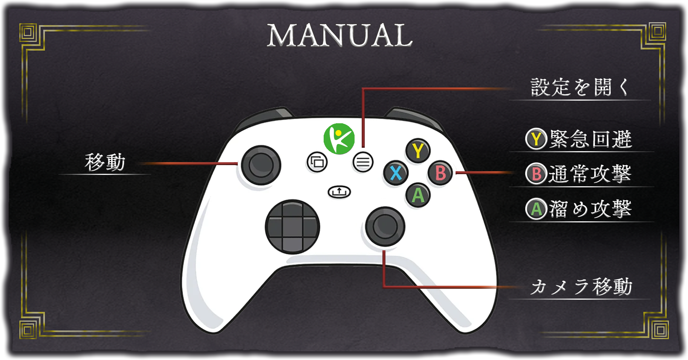
ゲーム説明
次々と現れる敵をひたすら倒してハイスコアを目指す、爽快感溢れる「無双系アクションゲーム」。
撃破した敵の数やプレイヤーの到達レベルに応じてスコアが変動し、最終スコアに基づいて3段階の評価が下される。
最高ランク「MASTER」を目指して挑戦してほしい。
技術的なこだわり①：システム
01独自のトリガー判定システム「GhostBody」
物理エンジン（BulletPhysics）だけで全ての当たり判定を処理しようとした結果、「攻撃のダメージ判定」や「敵の視野」のような“すり抜けるが接触だけ検知したい”処理が重く扱いづらいと判断。自作センサーシステムGhostBodyを開発し、処理負荷の低減とバグの起きにくい設計を両立させた。
設計上の工夫
全キャラクター・全ギミック間で総当たり判定すると処理落ちする
近接ペアのみ抽出する広域判定＋境界球の早期リターンで重い計算をスキップ
「相手が敵なら」というif分岐がギミック増加で複雑化・低可読化
属性（Attribute）とマスク（Mask）をビット演算で管理し、複雑な条件を一瞬で判定
当たり判定の生成・破棄を手動で行うことによる消し忘れ・メモリリーク不安
コンストラクタ/デストラクタでマネージャーへの自動登録・解除＋std::unique_ptrで安全管理
判定ループ内で直接HP減少・ワープ処理を行うとエラーが起きやすい
CollisionHitManagerで判定結果を一旦リスト化し、全判定終了後にまとめて処理を実行
02JSONホットリロード機能による開発環境の効率化
アクションゲームの面白さは「手触り」で決まる。だがC++に数値を直書きすると微調整のたびにコンパイル待ちが発生し、トライ＆エラーの回数が減ってしまう課題があった。
パラメータやUIレイアウト情報を外部JSONで管理し、ファイルの最終更新時刻を毎フレーム監視。ゲームを起動したままJSONを上書き保存すると即座に画面へ反映される仕組みを構築し、「遊びながら数値を変更する」開発環境を実現した。
03ダブルバッファ構造を採用した「タスクスケジューラ」
「攻撃の0.1秒後に判定を出し、さらに0.1秒後に消す」といった遅延処理を安全に実装するため、ラムダ式で処理を予約できるTaskSchedulerSystemを自作した。
std::vectorへタスクを詰めてループ実行中、実行中タスクが新規タスクを予約すると即クラッシュ
ループ中のpush_backでメモリ再確保が発生し、参照アドレスが破壊されていた
解決：「今フレームで実行するもの」と「次フレームに回すもの（pendingNextFrameEvents_）」を完全に分離するダブルバッファ構造へ再設計。フレーム末尾でswapすることで、どんなに複雑な遅延処理が連鎖してもクラッシュしないスケジューラを完成させた。
04状態遷移によるプレイヤーアクションと堅牢なステート管理
全アクションをステートマシンで管理。各ステートはEnter / Update / Exit / CanChangeStateの4メソッドで構成し、遷移条件をステート側が自己申告する設計とした。
回避とコンボ攻撃
回避：Enter時に入力方向を確定し、回避中に別方向へ入力しても向きが不自然に変わらない仕様。SetAvoiding(true)で無敵フラグを立て、線形減速で滑らかに停止する。
ジャスト回避：敵の攻撃が当たる直前のわずかなタイミングで回避入力を行うと、ジャスト回避が発動する。成功時はスロー演出が入り、プレイヤーに有利な状況を生み出す。通常の無敵判定とは別に判定ウィンドウを設け、技術的な回避を報酬として返す設計とした。
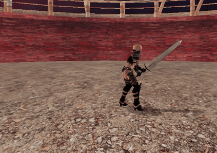
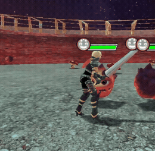
通常攻撃（3コンボ）：ComboAttackCharacterStateを基底クラスに、各コンボを派生クラスでGetComboParam()オーバーライドするテンプレートメソッドパターンを採用。isComboInput_フラグでコンボ入力を記録し、攻撃判定の発生・消滅はTaskSchedulerSystemでミリ秒単位制御。
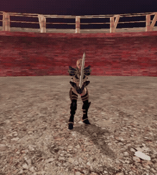
溜め攻撃とモーションブレンド
溜め攻撃：Start（チャージ）→Looping（押し続け）→End（発射）の3フェーズ。End遷移時にアニメーション再生速度を2倍に引き上げ、爽快感のある振り抜きを表現。
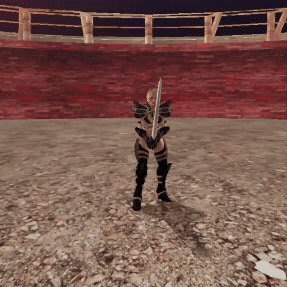
モーションブレンド：PlayAnimation(種別, ブレンド時間)を実装し、ステートごとに最適な補間時間を調整。激しいコンボから回避・静止状態への移行をコマ飛びなく滑らかに繋ぐ。
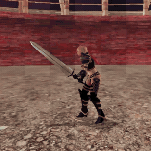
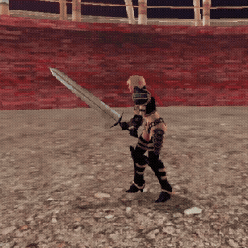
HPに連動する動的モーション
毎フレームIsInjured()でHP割合を判定し、一定値以下でInjuredIdle / InjuredRunへ自動切替。負傷状態では移動速度0.5倍に制限され、ノックバック後の起き上がり時も再び自動で負傷ステートへ戻るよう優先度を制御。
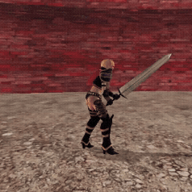
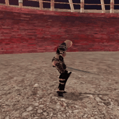
05敵キャラクターの「オブジェクトプール」によるFPS安定化
当初は敵の出現・死亡のたびにnew / deleteを行っていたが、敵が同時多数死亡した瞬間にメモリ解放処理が集中し、FPSが瞬間的に低下する「スパイク現象」が発生していた。
シーン初期化時に最大出現数の敵オブジェクトを一括生成しEnemyPoolに格納。出現時は未使用オブジェクトを検索してアクティブ化し、死亡時はdeleteせず描画・衝突判定をオフにして非アクティブへ戻す。
成果：リアルタイムなメモリ確保・解放をゼロにし、敵が次々と押し寄せる無双系アクションでありながら処理落ちのない安定した60FPSを維持。
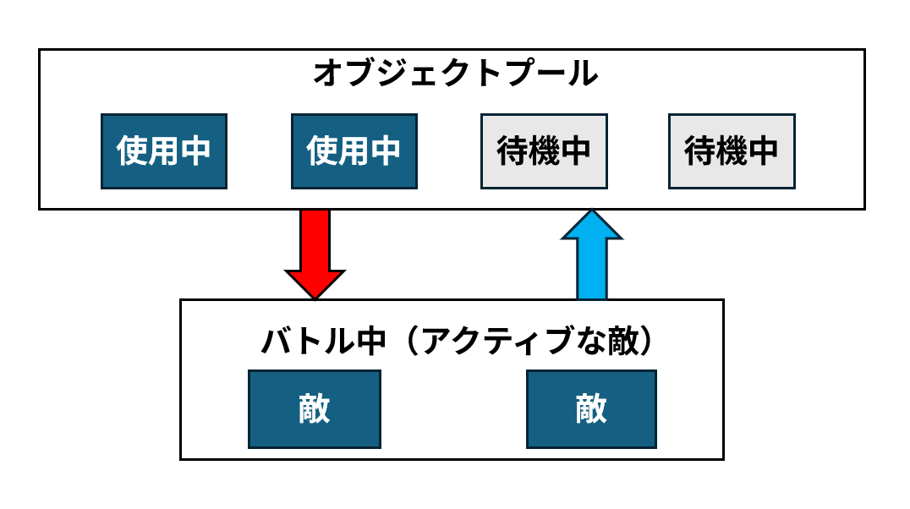
技術的なこだわり②：レンダリング
01フォワードレンダリングからディファードレンダリングへの移行
本作はスポーンエフェクト・スポットライト・環境光など多数の光源を同時に扱う。フォワードレンダリングでは光源数 × ジオメトリ数で描画コストが増加するため、光源が増えるほどフレームレートが低下する問題があった。これを根本から解決するために、レンダリングパイプラインの根幹をディファードレンダリングへ移行した。
各ジオメトリを描画するたびに全光源のライティングを計算するため、光源が増えるほど処理コストが線形増大する
ジオメトリ情報をG-Bufferに一度書き込み、ライティングをスクリーン空間で一括計算することで光源数の影響をジオメトリ描画から切り離す
G-Bufferの構成：1フレームに3枚のレンダーターゲットへジオメトリ情報を書き込む。
オブジェクトの色情報（RGBA8）。wチャンネルに「影を受けるか」フラグを格納し、テクスチャ枚数を節約
法線ベクトル（RGBA16_FLOAT）。wチャンネルにスペキュラ強度を格納することで、RTを1枚削減
各ピクセルのワールド座標（RGBA32_FLOAT）。wチャンネルが0のピクセルはジオメトリなしとして後段でdiscardする
このワールド座標RTをそのままDoF（被写界深度）シェーダーでも参照し、カメラとの実距離からぼかし量を算出。RTを使い回すことで追加コストなしにDoFの精度が向上した
ライティングパス（deferredLighting.fx）：G-Bufferの3枚を読み込み、ディレクションライト・ポイントライト・スポットライト・半球ライト・VSMシャドウを一括計算する。さらにTBDR（タイルベースディファードレンダリング）をコンピュートシェーダーで実装し、最大1000個のポイントライトをタイル単位でカリングして処理を分散させた。
02壁のディザリング透過による視認性向上（modelWall.fx）
カメラとプレイヤーの間に壁などの遮蔽物が入り込むと自キャラが見えなくなり、プレイの快適性が損なわれる。これを解決するため、アルファブレンドではなくカスタムシェーダーmodelWall.fxによる順序付きディザリング透過を実装した。
描画コストが高く、不透明オブジェクトとのソート問題やZバッファ書き込み制限で管理が複雑化する
描画順序を変えず不透明パスのまま透過表現できるディザリングを選択
ベイヤー行列によるフェード表現：ピクセルシェーダーで4×4の「ベイヤー行列」からスクリーン座標の閾値を抽出し、カメラと壁の距離から算出した間引き率（clipRate）と比較。clip()関数でピクセルを網目状に間引き、接近するほど自然に透けていく視覚効果を実現。
適用範囲の限定：壁モデル全体に適用すると床・天井・柱まで透けて立体感が崩れるため、頂点シェーダーから渡される「法線のY成分」と「カメラの高さ」を条件式に組み込み、プレイヤーを真に遮る壁面だけにディザリングを限定。
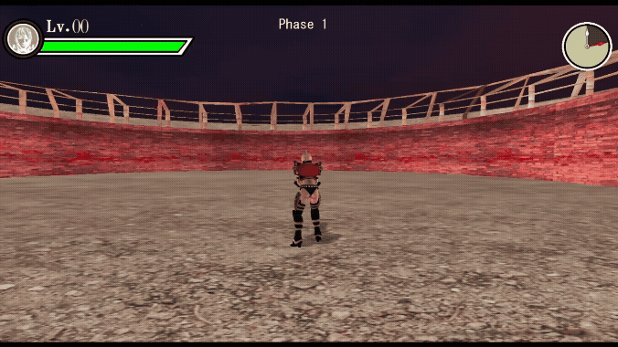
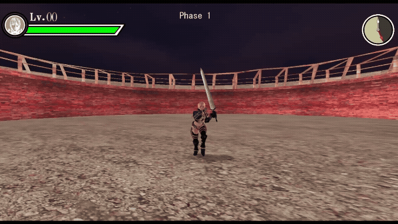
03溜め攻撃中の被写界深度（DoF）・モーションブラー演出
溜め攻撃の「チャージ中」という緊張感あるフェーズを、画面エフェクトで視覚的に強調するために実装した。チャージ中は周囲をぼかし、振り下ろしの瞬間にエフェクトが消えることで「解放感」と「爽快感」をより強く演出できる。
プレイヤー本体までぼけると操作感が損なわれる
GBufferのワールド座標からプレイヤー周囲に「保護ゾーン」を設け、その外だけをぼかす
同一レンダーターゲットの同時読み書きはGPU動作が不定になる
メインRT → テンポラリRTへコピーしてからブラーを合成する2パス構成で回避
エフェクトが瞬時にON/OFFされると不自然に見える
毎フレーム少しずつ強度を補間し、チャージの「高まり」と「解放」をエフェクトの変化で表現
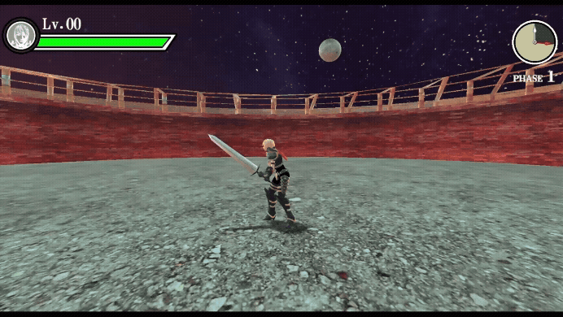
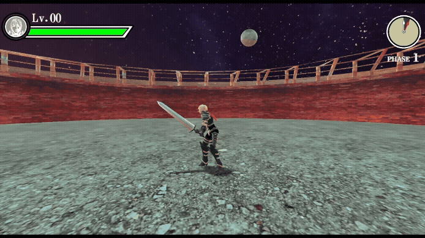
画面エフェクトで酔いやすいプレイヤーに対して、演出を強制することでプレイ体験を損ねる恐れがあった
オプション画面からDoFとモーションブラーをそれぞれ独立してOFFにできる設定を追加した
ゲーム状態フラグ（チャージ中かどうか）とユーザー設定（ONにしているか）をAND条件で評価し、どちらかがOFFであれば確実にエフェクトが無効化される設計とした。
04敵スポーン時のスポットライト演出
敵が突然出現すると、プレイヤーが気づかずに攻撃を受けてしまう問題があった。光でスポーンのタイミングを視覚的に伝えることで、「敵が来た」と直感的に気づかせる演出を実装した。
スポットライトだけでは足元が暗くなり浮いた印象になる。また1種類の光では演出として単調になりやすい
足元に暖色系ポイントライト（近距離グロー）＋真上から絞った円錐スポットライトを組み合わせ、地面の輝きと天からの光が共存する舞台的な出現演出を実現
線形に暗くすると終盤まで明るすぎて、急に消えるような不自然な印象になる
強度を √t で減衰させることで明るさを長く維持しつつ、終盤でなめらかに消えるカーブを実現
スポットライトが固定高さだと静的な印象で、「降ってくる光」の動きが伝わらない
出現直後から easeOutCubic で高さを 1.0 倍 → 1.95 倍へ拡張し、天空から地上へ光が広がり降りてくるような動きを表現
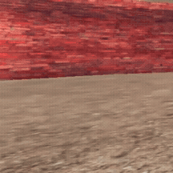
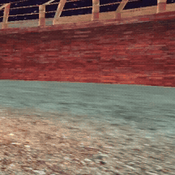
ゲームとしてのこだわり：UI・UX設計
演出と没入感を最優先に、見た目と処理を分離したシステムから物理演算ベースの揺れまで、UI全体を作り込んだ。
01「見た目」と「処理」を分離した3層構造UIシステム
ボタン位置をずらすだけでC++を書き換えビルドを待つ煩わしさを解消するため、UIの仕組みを根本から再設計した。
画像やテキストなど画面を構成する最小単位
複数のUIPartsを並べて1画面を構成
Menu（裏側の処理）：カーソル移動や決定ボタンなどの入力判定・ロジックのみを担当。見た目と処理を完全分離したことで、デザイン修正と挙動修正で見るべきコードが明確になりバグが減少した。
JSONによる自動レイアウト：座標値をC++に直書きせずtitleMenu.json等の外部JSONに集約。Layoutクラスが読み込んで自動配置するため、起動したままの数値調整が可能になった。
Menu親クラスによる量産：フェードイン・アウトやカーソル音などの共通処理をMenu基底クラスへ集約。新規画面は継承して独自処理を書くだけで済むよう設計し、開発スピードを向上させた。
02数学的アプローチによる円形サークルゲージ（circularGauge.fx）
テクスチャ切り替えやマスク画像に頼らず、HLSLシェーダー上で数学的に円弧を描画する動的ゲージを実装。
ピクセルシェーダー内でUV座標から中心点へのベクトルを求め、atan2で角度を算出。進捗率（0.0〜1.0）との比較で描画を切り替える。さらにinnerRadius / outerRadius / arcSpanをバッファ経由のパラメータ化により、「制限時間タイマー」と「経験値ゲージ」という見た目の異なる2つのUIを1枚のシェーダーで使い回すことに成功し、VRAMと描画パスを節約した。
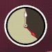
経験値ゲージは線形補間（Lerp）で滑らかに上昇するアニメーションを実装。100%到達時に内部データをリセットし、レベルをインクリメントした上で残り経験値を次レベルへ繰り越すリセット・ラップ処理を組み込んだ。
033乗イージングと減衰正弦波を用いた「斬撃ワイプ演出」
タイトル開始の瞬間、メインロゴが刀で切り裂かれて左右に割れる演出を専用ワイプシェーダーwipe.fxで実装。各ピクセル座標を斬撃角度に合わせたワイプ方向ベクトルへ射影し、進行度に応じてclip()することで斜め45度ラインに沿った切断表現を実現した。
等速ではなくt³制御により、静かに始まり一瞬で鋭く切り抜ける「刀特有の速度感」をUIの動きで表現。
状態機械で制御するロゴの減衰振動：ワイプ完了後、左右に分割したテクスチャへ切り替え外側へ展開。専用の状態機械（ShakeStep1〜4）で揺れを管理する。
この減衰正弦波をベースに、激しい跳ね上がりから徐々に収束するリアルな物理挙動を再現。ディレイをミリ秒単位で調整し「重厚感のある衝撃」をフィードバックとして伝えている。
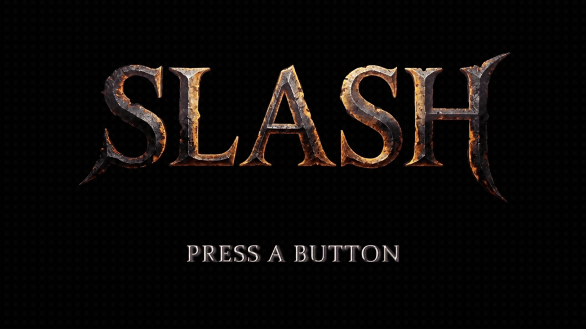
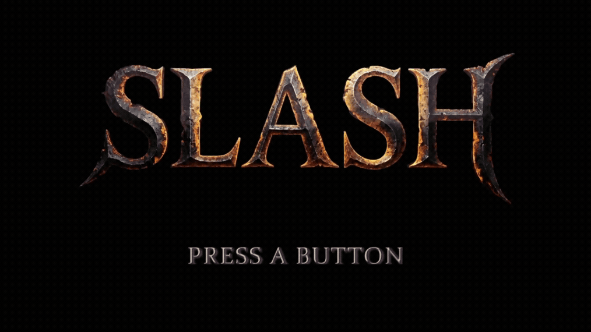
04視線とゲームテンポを妨げないインゲーム「通知UI」
レベルアップ通知：攻撃力が上昇するのは偶数レベルのみという仕様に合わせ、奇数レベルは「Level UP」単体、偶数レベルは時間差で「攻撃力UP」が出現する2段表示をロジック側で動的に出し分け。UITranslateAnimation（スライドイン）とUIColorAnimation（フェード）を組み合わせ、派手な点滅は避けたスマートな動きに抑えた。表示後2.0秒で自動フェードアウトし座標・透明度を初期化、同一インスタンスを安全に再利用するメモリ効率の良い設計とした。
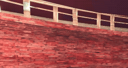
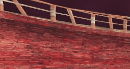
レベル数値アニメーション：数値フォントが上から降って着地する2段階アニメーション。Phase1はt³の3乗EaseInで重力に従い加速度的に着地する「重さ」を表現、Phase2は減衰正弦波で文字を縦揺れさせ自然に収束させる。隣接する「Lv.」アイコンは着地から0.06秒遅らせ振幅を小さくして揺らすことで、衝撃が時間差で伝わるリアルな手触りを演出した。
05指数関数補間（Ease Out）によるHPバー回復演出
ダメージと回復でゲージの増減アルゴリズムを変え、バトルの緊張感を強調した。
回復した瞬間は一気にゲージが伸び、満タンに近づくほどスッと滑らかに減速して吸い込まれる動き。この緩急により「体力が大きく回復した」という強い安心感と手応えを与える。さらにゲージが90%に達した瞬間にhealEffectFired_フラグをトリガーし、HPバー先端にきらめく回復エフェクトを一度だけジャストタイミングで再生する。
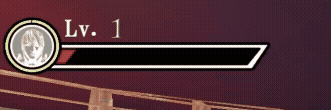
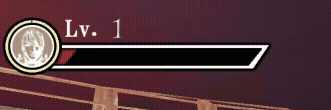